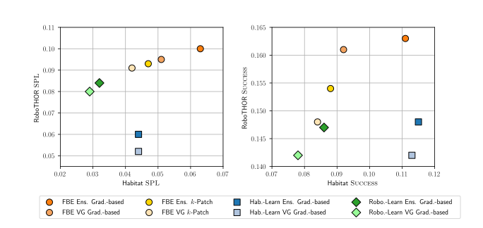

CLIP on Wheels:
Open-Vocabulary Models are (Almost) Zero-Shot Object Navigators

Can open-vocabulary models like CLIP solve robotics tasks without being fine-tuned? We study this
question in the context of object navigation, where an agent must find a specified goal object. We
consider a zero-shot setting, where agents are not trained to navigate to the goal objects. To address
this task, we introduce the CLIP on Wheels (CoW) framework and evaluate many CoWs in both Habitat and
RoboTHOR embodied environments, which are visually and physically distinct. We find that a simple CoW,
with CLIP-based object localization plus classical exploration---and no additional
training---outperforms competing approaches in efficiency and robustness to dataset distribution shift.
On four categories considered in previous work, CoW shows a 16.1 percentage point improvement in success
over the state-of-the-art baseline that trains on in-domain data.
Summery video
Check out this overview video, which shows a CoW finding a plant in an environment it was never trained to navigate (RoboTHOR).
Benchmarking robustness to domain-sift
We compare several CoWs, which are made of exploration and object localization modules. For exploration: frontier-based exploration (FBE), exploration learned in Habitat (Hab.-Learn), and exploration learned in RoboTHOR (Robo.-Learn). For object localization: gradient-based (Grad.-based) and patch-based (k-Patch). Moreover, we consider two CLIP prompting strategies. First "a photo of a {object} in a video game." (VG). Second an 80 prompt ensemble introduced in the original CLIP work (Ens.).
 (left) FBE CoWs are most robust to the domain shift and are not trained beyond their CLIP initialization. By contrast, CoWs with learnable exploration policies perform worse in environments where they are not trained. The superior performance of FBE CoWs suggests that the learned policies are sub-optimal for efficient object navigation (i.e., low SPL). (right) We observe similar trends with success as with SPL. While Hab.-Learn CoWs slightly outperform the best FBE CoW, these models are also less robust.Team
Bibtex
@article {gadre2022cow,
title={CLIP on Wheels: Open-Vocabulary Models are (Almost) Zero-Shot Object Navigators},
author={Gadre, Samir Yitzhak and Wortsman, Mitchell and Ilharco, Gabriel and Schmidt, Ludwig and Song, Shuran},
journal={arXiv},
year={2022}
}
Acknowledgements
We would like to thank Jessie Chapman, Huy Ha, Sachit Menon, and Sarah Pratt for valuable discussion and feedback. We would also like to thank Luca Weihs for technical help with AllenAct. This work was supported in part by NSF CMMI-2037101, NSF IIS-2132519, and an Amazon Research Award. The views and conclusions contained herein are those of the authors and should not be interpreted as necessarily representing the official policies, either expressed or implied, of the sponsors.
Contact
If you have any questions, please contact Samir.